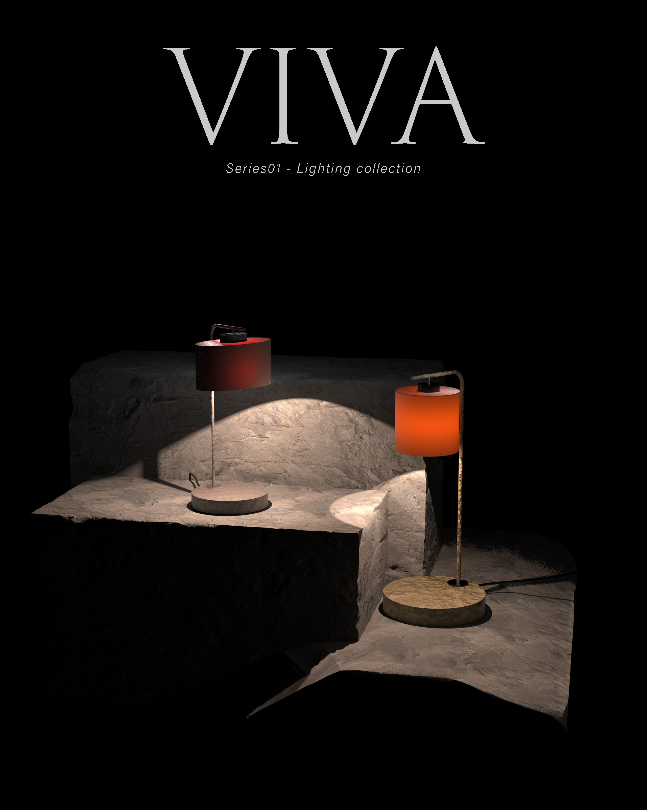
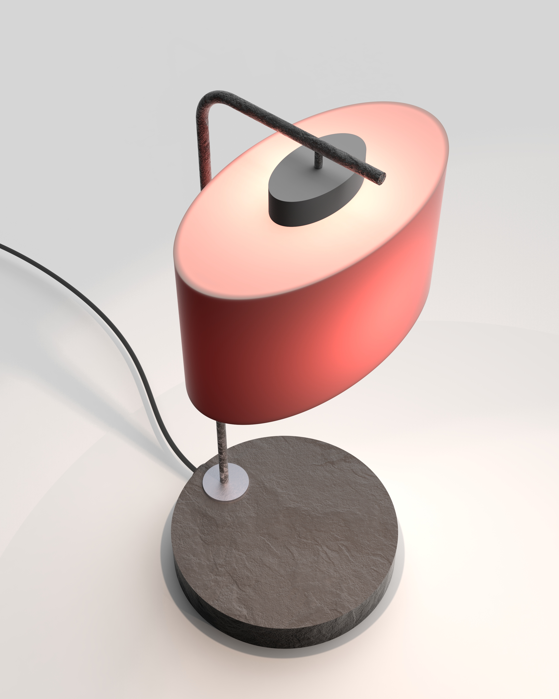
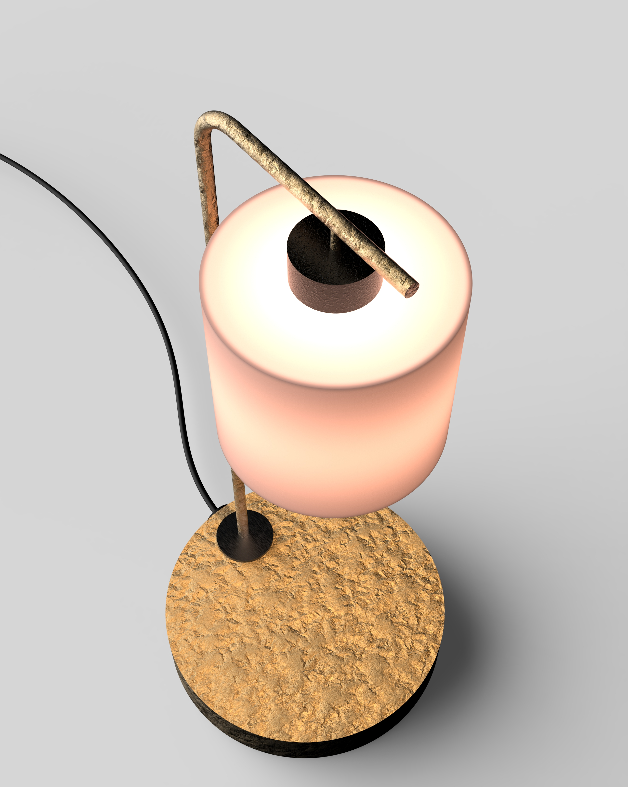
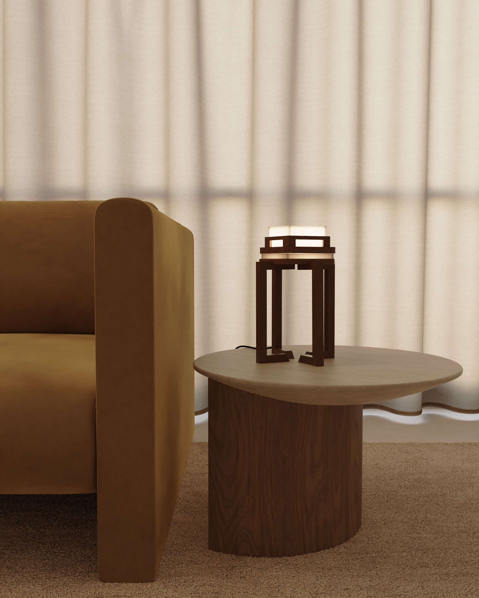
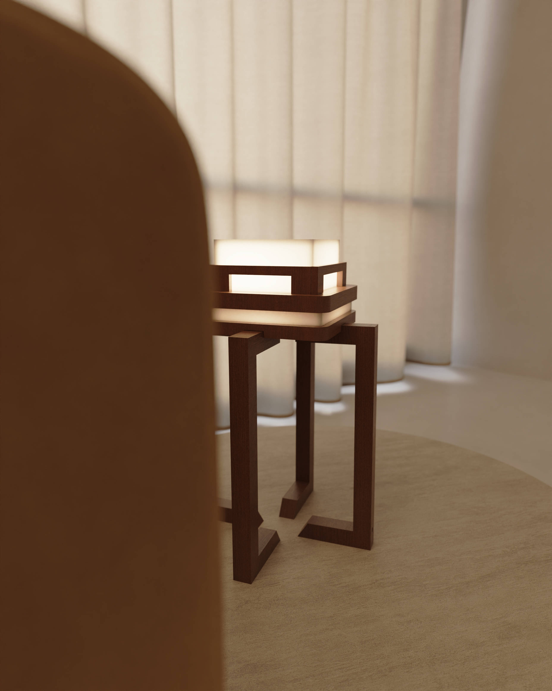
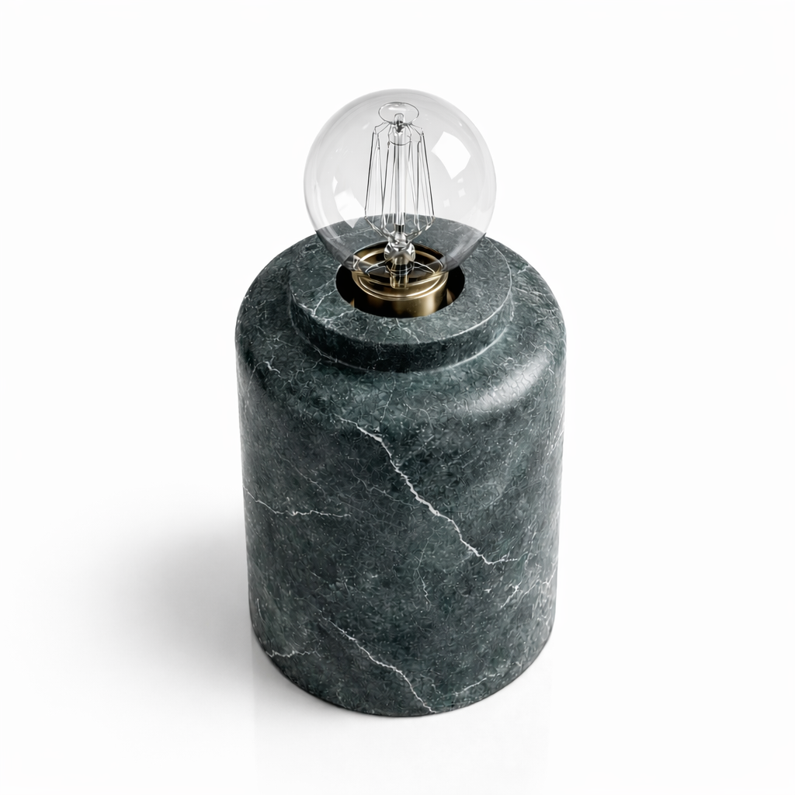
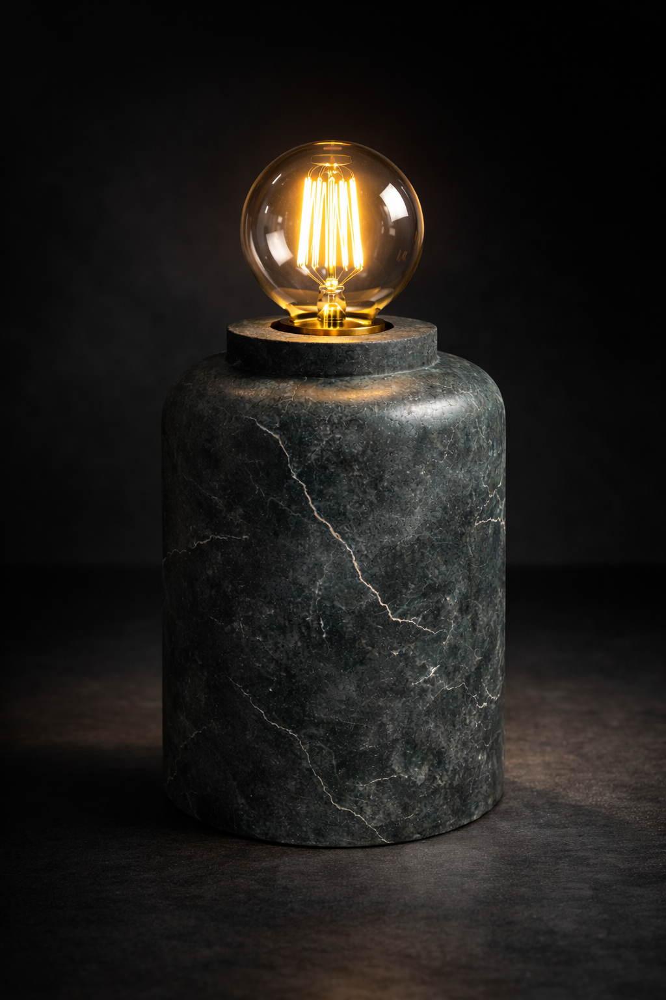
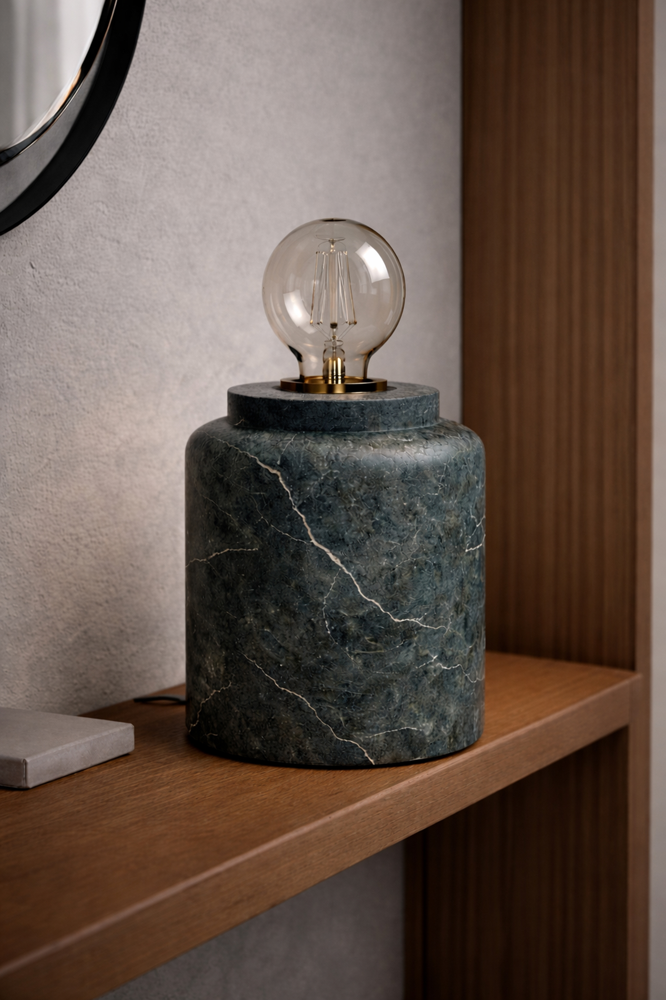

VIVA Project

VIVA is designed based on the idea that light is not only a functional element, but a defining component of spatial atmosphere. Developed specifically for living room use, this lighting piece aims to create a soft, balanced, and inviting environment.


The opal glass diffuser softens the light and ensures a homogeneous distribution, while the metal structural elements provide both visual lightness and structural durability. The natural stone base adds visual weight and physical stability, grounding the product within the space.
With a light output of 450 lumens and a warm color temperature of 2700K, it offers an ideal, glare-free, and balanced lighting experience for living spaces.
Komorebi Project

This table lamp is designed for living rooms and bedrooms, inspired by the simplicity and balance of Japanese design philosophy. The form emphasises calmness, proportion, and a quiet presence within the space.
The body is entirely crafted from wood, bringing warmth and natural texture into the environment. Its structural composition conveys a sense of stability and grounding while maintaining a refined, minimal aesthetic.
The upper diffuser is made of acrylic glass, allowing the light to spread softly and evenly.


With a light output of approximately 300 lumens and a warm colour temperature of 2700K, the lamp provides soft, balanced illumination.
Rather than functioning as a primary light source, the design focuses on creating a peaceful, intimate lighting experience, encouraging a slower, more mindful interaction with the space.
Ceramic Table Lamp

This table lamp is designed to create a warm and intimate atmosphere, suitable for living rooms and bedside settings. The form is kept simple and grounded, allowing the material and light to take centre stage.
The body is crafted from ceramic, emphasising texture and natural surface variations. Its solid and monolithic presence brings a sense of stability and tactile richness to the space.


The light source features a visible filament bulb, adding a nostalgic and warm character to the design. This exposed bulb not only enhances the lamp's visual identity but also contributes to a softer, more atmospheric lighting experience.
With a light output of approximately 250–300 lumens and a warm colour temperature of 2700K, the lamp provides a low-intensity, glare-free illumination.